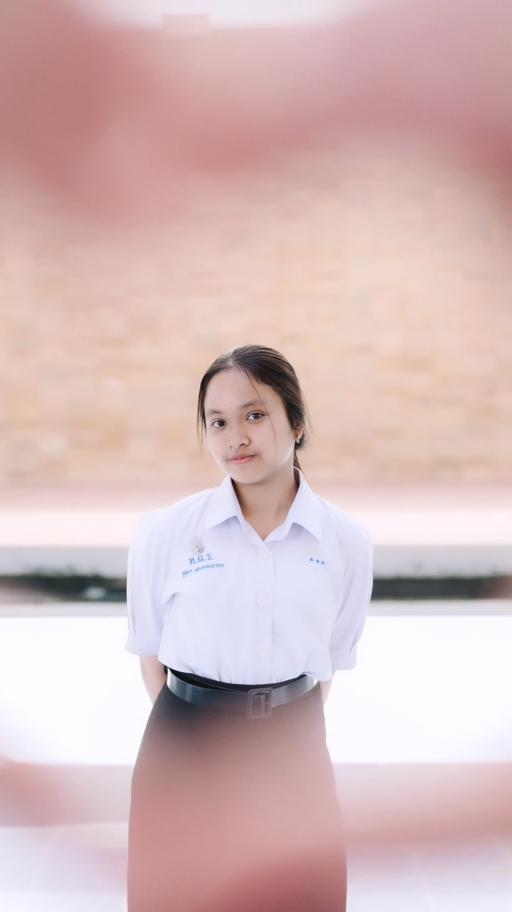
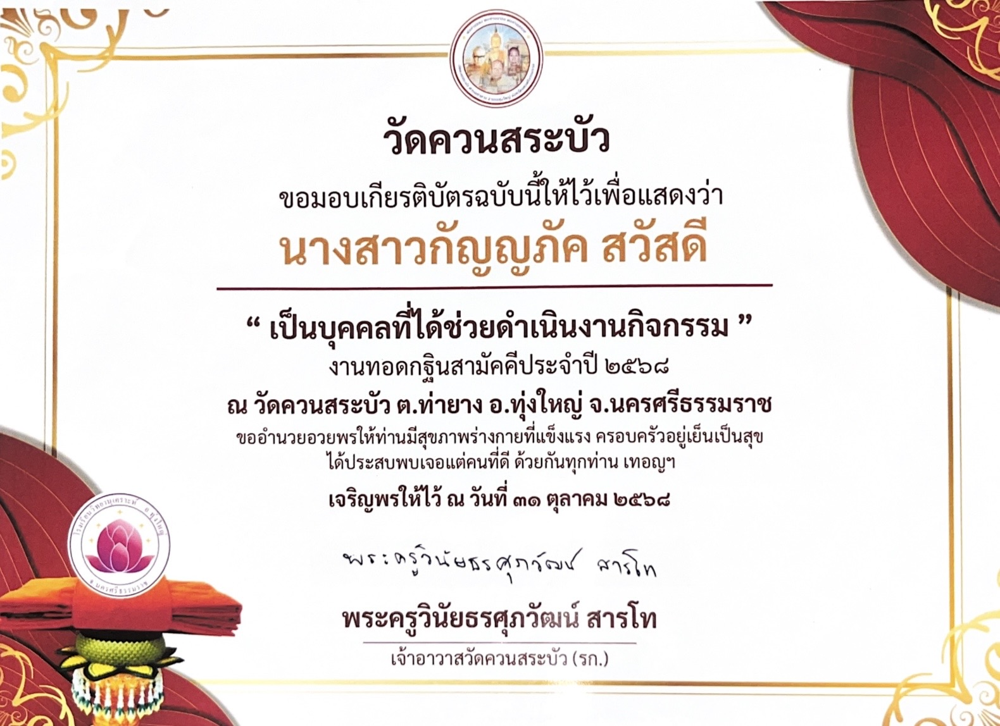
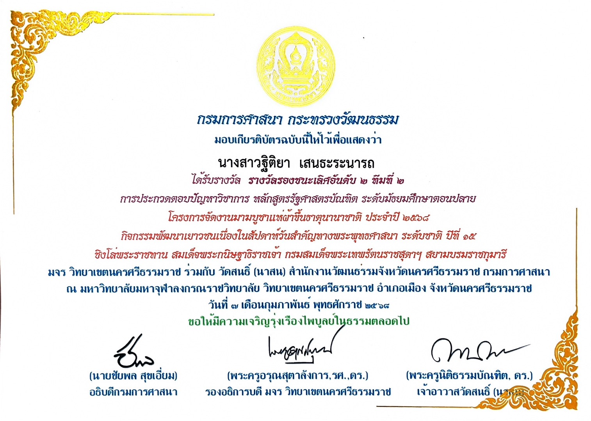

แฟ้มสะสมผลงานเพื่อเข้าศึกษาต่อ
คณะมนุษยศาสตร์และสังคมศาสตร์
สาขาวิชารัฐประศาสนศาสตร์
มหาวิทยาลัยราชภัฏสุราษฎร์ธานี
เลือกชมแฟ้มสะสมผลงาน
ชั้นมัธยมศึกษาปีที่ 6
แผนการเรียนศิลป์-คำนวณ
เข้าสู่ PortfolioMY PORTFOLIO
รัฐประศาสนศาสตร์ | มหาวิทยาลัยราชภัฏสุราษฎร์ธานี
ดูประวัติส่วนตัว กลับหน้าเลือกบุคคลดิฉันเป็นผู้ที่มีความสนใจในการทำงานร่วมกับผู้อื่น มีความรับผิดชอบ กล้าแสดงออก และพร้อมเรียนรู้สิ่งใหม่ ๆ มุ่งมั่นพัฒนาตนเองทั้งด้านความรู้ ความคิดสร้างสรรค์ และการเป็นผู้นำ
โรงเรียนทุ่งใหญ่เฉลิมราชอนุสรณ์รัชมังคลาภิเษก
แผนการเรียนศิลป์-คำนวณ
มหาวิทยาลัยราชภัฏสุราษฎร์ธานี
คณะมนุษยศาสตร์และสังคมศาสตร์
สาขาวิชารัฐประศาสนศาสตร์
ได้รับการเลือกตั้งให้เป็นสมาชิกสภานักเรียน เป็นโอกาสในการเรียนรู้การทำงานร่วมกับผู้อื่นและการมีส่วนร่วมในกิจกรรมของโรงเรียน
เข้าร่วมกิจกรรมค่ายสภานักเรียน เพื่อพัฒนาทักษะความเป็นผู้นำ การทำงานเป็นทีม และการอยู่ร่วมกับผู้อื่น
ได้รับมอบหมายให้ปฏิบัติหน้าที่กรรมการฝ่ายระเบียบวินัย ฝึกความรับผิดชอบ ความมีวินัย และการปฏิบัติงานตามหน้าที่
เป็นส่วนหนึ่งในการช่วยดำเนินงานกิจกรรมทอดกฐินสามัคคี ฝึกการประสานงาน การช่วยเหลือส่วนรวม และการทำงานร่วมกับชุมชน

MY PORTFOLIO
รัฐประศาสนศาสตร์ | มหาวิทยาลัยราชภัฏสุราษฎร์ธานี
ดูประวัติส่วนตัว กลับหน้าเลือกบุคคลดิฉันเป็นผู้ที่มีความสนใจในการทำงานร่วมกับผู้อื่น มีความเป็นผู้นำ มีความคิดสร้างสรรค์ และชื่นชอบการทำกิจกรรมต่าง ๆ พร้อมเรียนรู้และพัฒนาตนเองอยู่เสมอ เพื่อเตรียมความพร้อมสำหรับการศึกษาต่อและการทำงานในอนาคต
โรงเรียนทุ่งใหญ่เฉลิมราชอนุสรณ์รัชมังคลาภิเษก
แผนการเรียนศิลป์-คำนวณ
มหาวิทยาลัยราชภัฏสุราษฎร์ธานี
คณะมนุษยศาสตร์และสังคมศาสตร์
สาขาวิชารัฐประศาสนศาสตร์
ได้รับการเลือกตั้งให้เป็นสมาชิกสภานักเรียน ได้เรียนรู้การทำงานร่วมกับผู้อื่น การรับฟังความคิดเห็น และการมีส่วนร่วมในการพัฒนาโรงเรียน
เข้าร่วมกิจกรรมค่ายสภานักเรียน เพื่อพัฒนาภาวะความเป็นผู้นำ ความสามัคคี และทักษะการทำงานเป็นทีม
ได้ปฏิบัติหน้าที่กรรมการฝ่ายระเบียบวินัย ฝึกความรับผิดชอบ ความมีระเบียบวินัย และการทำงานตามที่ได้รับมอบหมาย
ได้รับโอกาสเป็นวิทยากรอบรมในค่ายคุณธรรม จริยธรรม สำหรับนักเรียนโรงเรียนวัดวังหิน เป็นประสบการณ์ในการถ่ายทอดความรู้ การสื่อสาร และการทำงานร่วมกับผู้อื่น

การประกวดตอบปัญหาวิชาการ